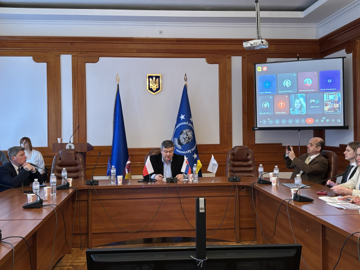
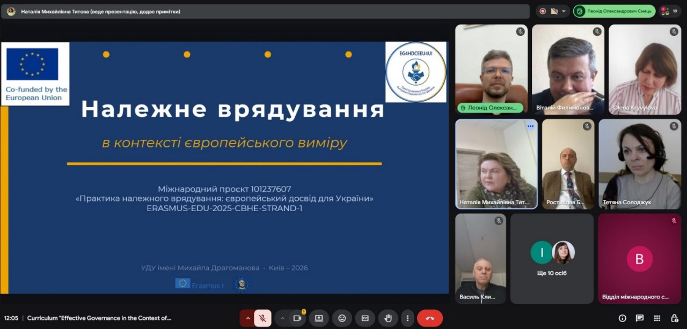
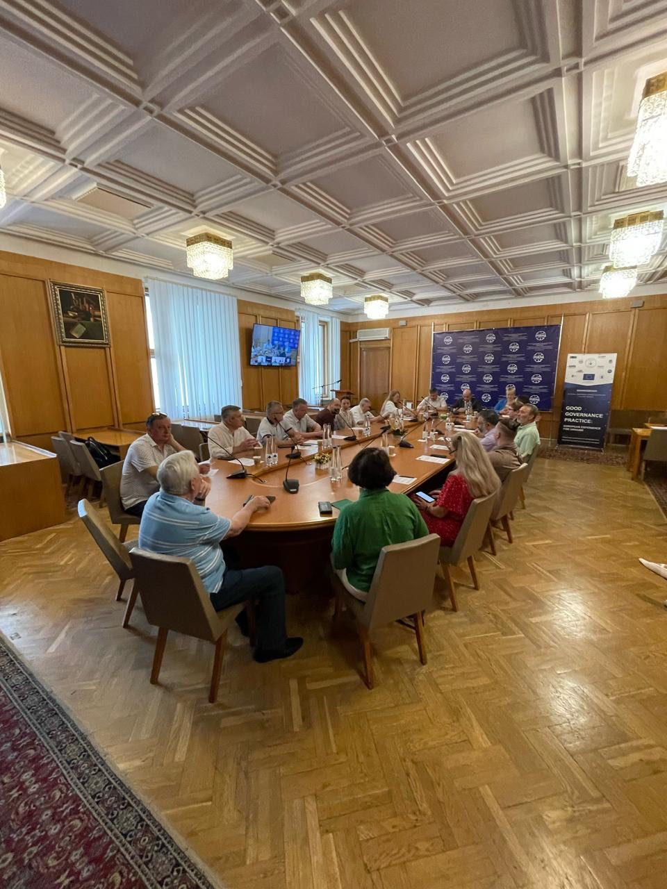
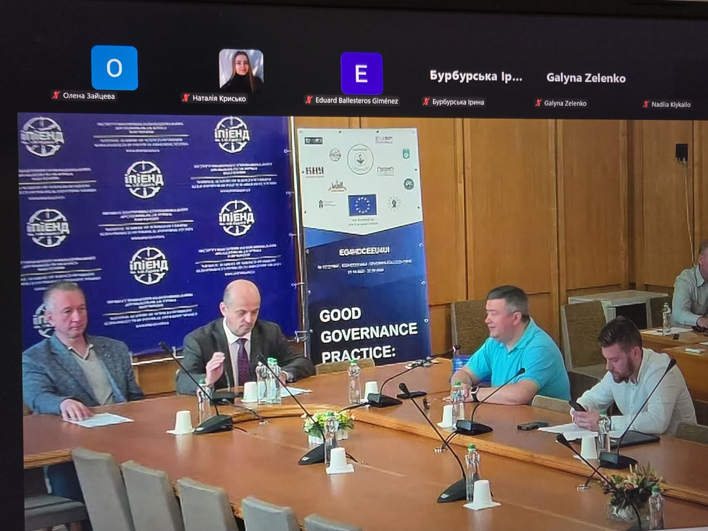
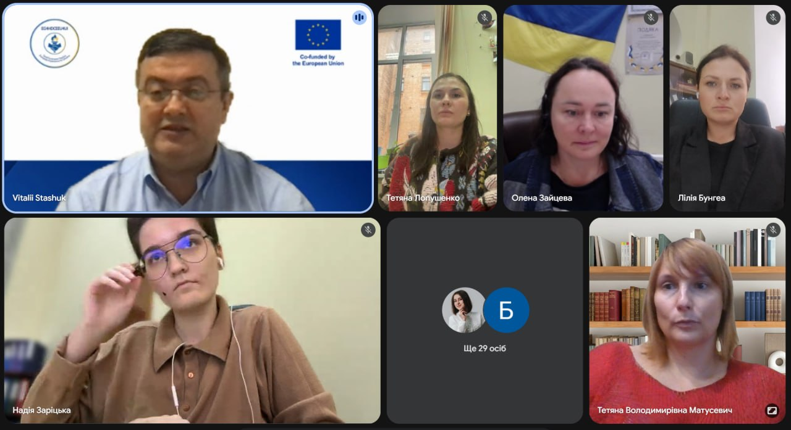
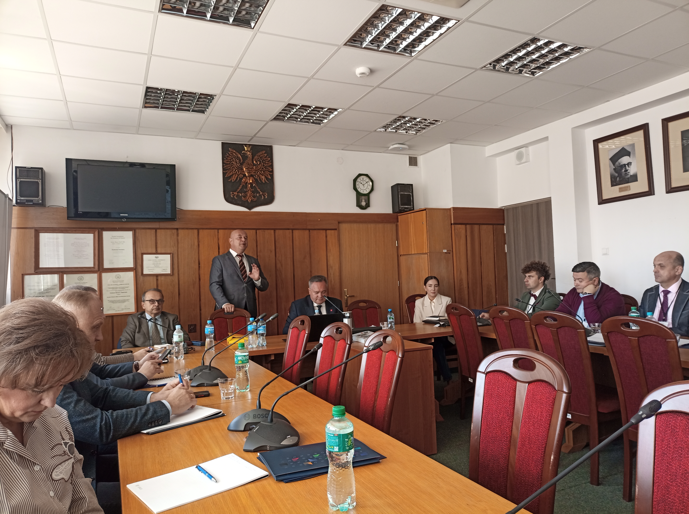

Новини та події

СТАРТ ПРОЄКТУ ERASMUS+ CBHE «Практика належного врядування: Європейський досвід для України»
4 грудня 2025 року відбулася стартова зустріч нового проєкту Erasmus+ CBHE «Good Governance Practice : European Experience for Ukraine» (101237607 – EG4HDCEEU4UI – ERASMUS-EDU-2025-CBHE) «Практика належного врядування: Європейський досвід для України», координатором/грантхолдером якого є Український державний університет імені Михайла Драгоманова...
Читати більше →
Публічне обговорення навчальної програми “Належне врядування в контексті європейського виміру”
27 березня 2026 року в межах реалізації міжнародного проєкту Erasmus+ № 101237607 — EG4HDCEEU4UI — ERASMUS-EDU-2025-CBHE «Практика належного врядування: Європейський досвід для України» відбулося публічне обговорення розробленої навчальної програми «Належне врядування в контексті європейського виміру» для підготовки здобувачів вищої освіти в українських партнерських університетах...
Читати більше →
Європейські практики належного врядування для України обговорили під час круглого столу в рамках проєкту Erasmus+
23 червня 2026 року в Інституті політичних і етнонаціональних досліджень ім. І.Ф. Кураса НАН України відбувся круглий стіл, присвячений європейським практикам належного врядування та можливостям їх упровадження в Україні...
Читати більше →Навчальний курс «Належне врядування» розпочинають викладати в університетах-партнерах проєкту Erasmus+
У рамках реалізації проєкту Erasmus+ CBHE «Практика належного врядування: Європейський досвід для України» (EG4HDCEEU4UI, № 101237607, ERASMUS-EDU-2025-CBHE), координатором/грантхолдером якого є Український державний університет імені Михайла Драгоманова, розроблено навчальний курс «Належне врядування в контексті європейського виміру», викладання якого розпочнеться у 2026/2027 навчальному році...
Читати більше →
Європейський досвід належного врядування в умовах війни обговорили під час другого круглого столу
11 вересня 2026 року в Інституті політичних і етнонаціональних досліджень ім. І.Ф. Кураса НАН України відбувся другий круглий стіл у рамках проєкту Erasmus+ CBHE «Практика належного врядування: Європейський досвід для України» (EG4HDCEEU4UI, № 101237607, ERASMUS-EDU-2025-CBHE), координатором/грантхолдером якого є Український державний університет імені Михайла Драгоманова...
Читати більше →Розпочато програму підвищення кваліфікації «Належне врядування у контексті європейського виміру»
У рамках реалізації міжнародного проєкту Erasmus+ CBHE «Практика належного врядування: європейський досвід для України» (№ 101237607, ERASMUS-EDU-2025-CBHE-STRAND-1), координатором якого є Український державний університет імені Михайла Драгоманова, розпочато реалізацію програми підвищення кваліфікації «Належне врядування у контексті європейського виміру». Програма призначена для державних службовців, посадових осіб місцевого самоврядування та адміністративно-управлінського персоналу закладів вищої освіти...
Читати більше →
У рамках проєкту Erasmus+ відбулася відкрита лекція «Принципи державного управління (Програма SIGMA)»
21 вересня 2026 року в рамках реалізації проєкту Erasmus+ CBHE «Практика належного врядування: Європейський досвід для України» (EG4HDCEEU4UI, № 101237607, ERASMUS-EDU-2025-CBHE), координатором/грантхолдером якого є Український державний університет імені Михайла Драгоманова, відбулася відкрита лекція на тему «Принципи державного управління (Програма SIGMA)»...
Читати більше →
Навчальний візит до Польщі «Вивчення досвіду Республіки Польща на прикладі УНІ-ЛЮБЛІН (Люблін) щодо впровадження європейського досвіду ефективного державного управління та підготовки відповідних кадрів»
З 27 вересня по 04 жовтня 2026 року відбувся Навчальний візит до Польщі «Вивчення досвіду Республіки Польща на прикладі УНІ-ЛЮБЛІН (Люблін) щодо впровадження європейського досвіду ефективного державного управління та підготовки відповідних кадрів» (УНІВЕРСИТЕТ МАРІЇ КЮРІ-СКЛОДОВСЬКОЇ) за проєктом Erasmus+ «Практика належного врядування: Європейський досвід для України» ERASMUS-EDU-2025-CBHE-STRAND-1 (координатор: Віталій СТАШУК)...
Читати більше →